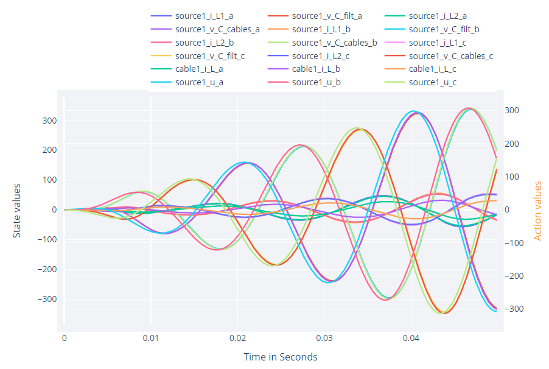

Consider the following code snippet
using ElectricGrid
env = ElectricGridEnv(num_sources = 1, num_loads = 1)
Multi_Agent = SetupAgents(env)
hook = Simulate(Multi_Agent, env)
RenderHookResults(hook = hook)This is a minimal example of a full ElectricGrid.jl setup. After running you should see some output in your terminal, created by Ipopt, an EPL licensed library ElectricGrid.jl is using. There should also appear a plot that looks like this: 
Now what does this code snippet do exactly?
_______________________________________________________________________________
using ElectricGridThis line imports the ElectricGrid.jl Package and it's components to the workspace so that we are ready to work with it.
_______________________________________________________________________________
env = ElectricGridEnv(num_sources = 1, num_loads = 1)Here we create the environment. The environment will take care of simulating the whole grid one timestep at a time. There are a vast amount of combinations of parameters that you can specify (here we just say we want one source and one load, nothing more) - the ElectricGridEnv constructor will take care of setting up the whole system. The environment is in fact designed to work along the guidelines of ReinforcementLearning.jl. A more detailled view on what is going on behind the scenes can be found in the Environment and NodeConstructor sections of this documentation.
_______________________________________________________________________________
Multi_Agent = SetupAgents(env)This is where we set up a controller for the simulation environment. Since no control-type parameters were set during the creation of the environment we will be setting up a classical controller for the one source in our grid since this is the default control-type. We actually create a struct of the type MultiController which can possess a whole set of controllers, one for each source in the grid, and they can be either classical controllers or reinforcement learning agents. Everytime after environment computes a new set of states of the grid for the next timestep the MultiController struct is used to provide every controller with the corresponding sub-set of the states, collect their respective actions and provide them as input for the environment such that the next time step can be simulated. More on how classical controllers or reinforcement learning agents work in this framework will be discussed in the coresponding sections of this documentation.
_______________________________________________________________________________
hook = Simulate(Multi_Agent, env)This starts the simulation of our setup. Since we did not specify anything else the experiment will run for one episode. The step length and amount of timesteps for an episode are both part of the environment. We did not specify them, so default values were chosen (maxsteps = 500 and ts = 1/10_000). After running the experiment we receive a struct of type DataHook. DataHook is once again designed to work as a hook object in the ReinforcementLearning.jl framework but with a lot of extra functionality to support data collection for cases that are relevant in ElectricGrid.jl.
_______________________________________________________________________________
RenderHookResults(hook = hook)This line just takes the previously received hook and renders a interactive plot of it's containing data. Like shown above, there is a lot to see and usually you want to narrow sown what exactly you want to plot. This can easily be done with the parameters states_to_plot and actions_to_plot, the usage of which will be showcased later.